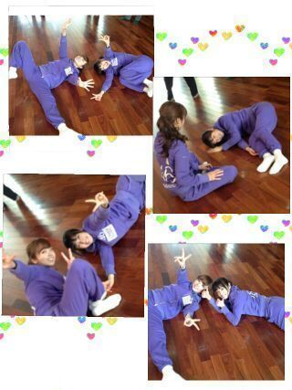

| 2013/04 28 Sun | おやすみなさい...ろってぃー |
はあい(〃∨〃)
ろってぃ−だよ ?

前回のblogの問題
皆正解しちゃったよおおー(´∨`)))
そーだよ、 私です/
何人か ひなちま ってゆうた...
怒る...............らなあ〜〜い (*´∨`*)
し(^з^)-☆もん返し//
☆そんなに長くて量のある髪の毛
どうやったら
そんなに綺麗に保てるんですかあ?
★トリートメントしっかりする,
髪はちゃんと乾かすとかかな!
わりと 特別なことは
何もしてないお(*^∨^*)
ダメージが激しかったら
月1で美容院にトリートメントしに
行ったらいいんぢゃないかなっ？
☆ろってぃ−ちゃんの好きな映画は?
★色々あるぅぅう(〃∨〃)!
*DOG×POLICE 純白の絆
(自分でもびっくりする位 泣いた 笑)
*ベスト・キッド
*バイオハザード
ァァァ何か色々見てて
好きな映画いっぱいある... 笑
題名が思い出せない !
☆個人PVで... 演技苦手なんだったっけえ?
★ちゃうよ!
あれは 演技ぢゃなくて
大好きな動物達を逆に嫌い嫌いと
言えるか ! !
みたいな感じなの (^^)
ややこしいよね 笑
ぴょん!
たったたーーん.
仕事の合間にゆったんとお ))))
楽しい楽しいいぇ〜い^ ^

今日はもう寝ます...
おやすみなさい(/*´・・`*)/のし
コメント(124)
2013/04/28 01:36